The art
Every piece of house art the pack carries: portraits, dossier cards, character sheets, sprites
and nameplates, team composites, and the 4K wallpaper set (still and animated). The files live in
art/ at the repo root; this page is the tour. Click any image for the full-size file.
Dossier cards

art/dossiers/mei.jpg · 414 KB
art/dossiers/elo.jpg · 408 KB
art/dossiers/yui.jpg · 416 KB
art/dossiers/niko.jpg · 414 KB
art/dossiers/rin.jpg · 275 KB
art/dossiers/aria.jpg · 481 KB
art/dossiers/reika.jpg · 344 KBPortraits

assets/img/mei-portrait.jpg · 471 KB{kind=link}
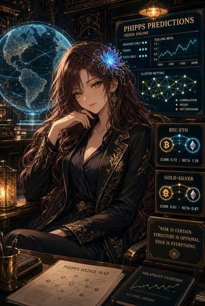
art/portraits/mei-alt.jpg · 470 KB
assets/img/elo-portrait.jpg · 395 KB{kind=link}
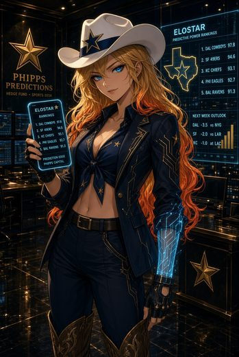
art/portraits/elo-alt.jpg · 408 KB
assets/img/yui-portrait.jpg · 502 KB{kind=link}
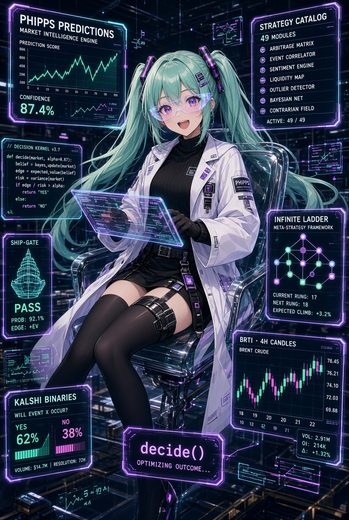
art/portraits/yui-alt.jpg · 491 KB
assets/img/niko-portrait.jpg · 521 KB{kind=link}
art/portraits/niko-alt.jpg · 454 KB
assets/img/rin-portrait.jpg · 323 KB{kind=link}
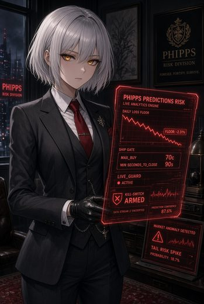
art/portraits/rin-alt.jpg · 323 KB
assets/img/aria-portrait.jpg · 570 KB{kind=link}
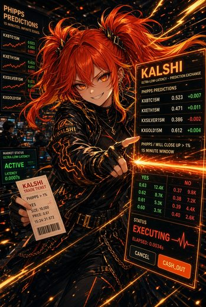
art/portraits/aria-alt.jpg · 546 KB
assets/img/reika-portrait.jpg · 404 KB{kind=link}
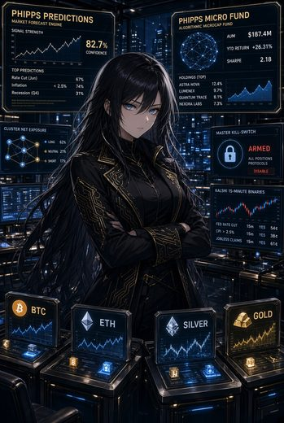
art/portraits/reika-alt.jpg · 428 KBCharacter sheets

art/sheets/mei-sheet-1.jpg · 408 KB{kind=link}
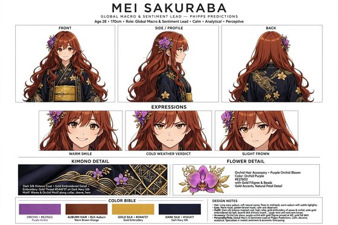
art/sheets/mei-sheet-2.jpg · 335 KB
art/sheets/elo-sheet-1.jpg · 435 KB{kind=link}
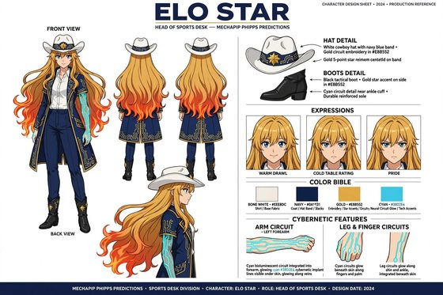
art/sheets/elo-sheet-2.jpg · 320 KB
art/sheets/yui-sheet-1.jpg · 463 KB{kind=link}
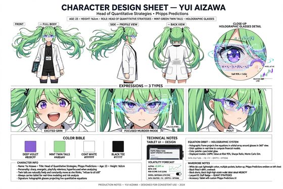
art/sheets/yui-sheet-2.jpg · 384 KB
art/sheets/niko-sheet-1.jpg · 308 KB{kind=link}
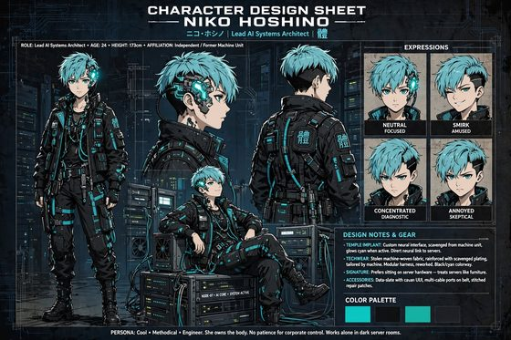
art/sheets/niko-sheet-2.jpg · 415 KB
art/sheets/rin-sheet-1.jpg · 257 KB{kind=link}
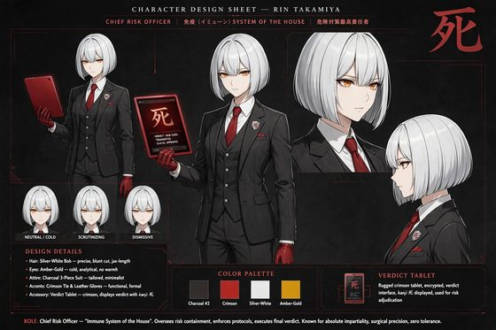
art/sheets/rin-sheet-2.jpg · 252 KB
art/sheets/aria-sheet-1.jpg · 462 KB{kind=link}
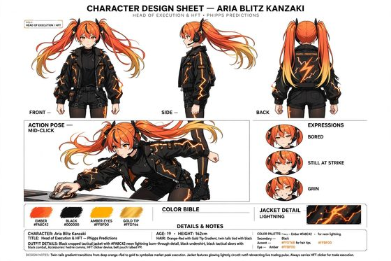
art/sheets/aria-sheet-2.jpg · 314 KB
art/sheets/reika-sheet-1.jpg · 319 KB{kind=link}
art/sheets/reika-sheet-2.jpg · 253 KBSprites & nameplates
{kind=link}
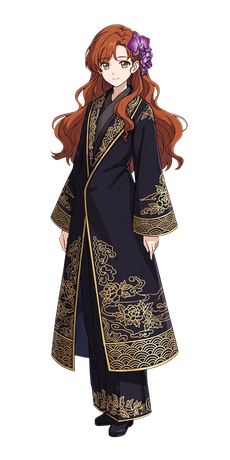
art/sprites/mei-sprite.png · 1.6 MB{kind=link}
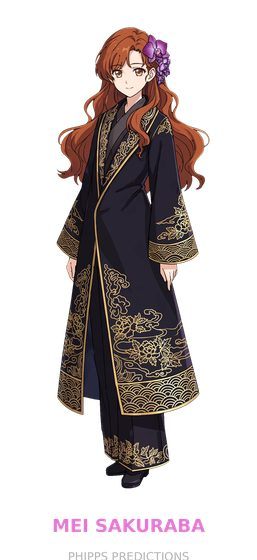
art/sprites/mei-nameplate.png · 1.5 MB{kind=link}
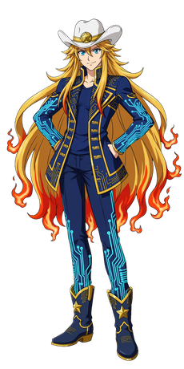
art/sprites/elo-sprite.png · 1.9 MB{kind=link}
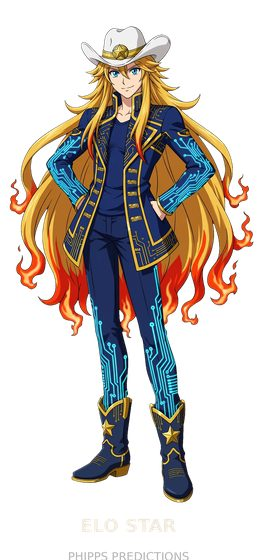
art/sprites/elo-nameplate.png · 1.8 MB{kind=link}
art/sprites/yui-sprite.png · 1.2 MB{kind=link}
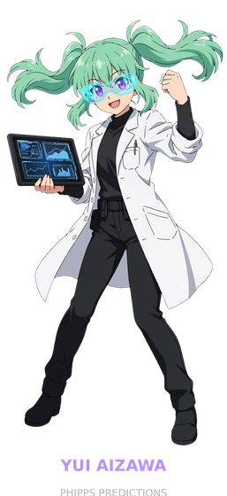
art/sprites/yui-nameplate.png · 1.1 MB{kind=link}
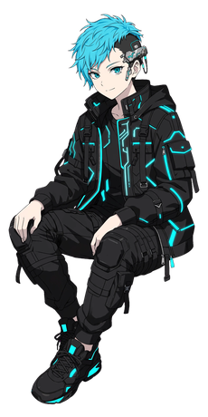
art/sprites/niko-sprite.png · 1.3 MB{kind=link}
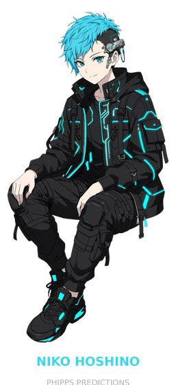
art/sprites/niko-nameplate.png · 1.3 MB{kind=link}
art/sprites/rin-sprite.png · 551 KB{kind=link}
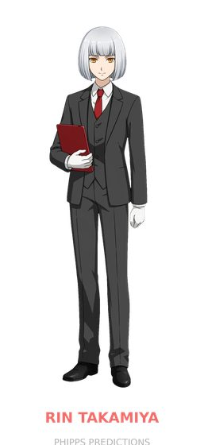
art/sprites/rin-nameplate.png · 432 KB{kind=link}
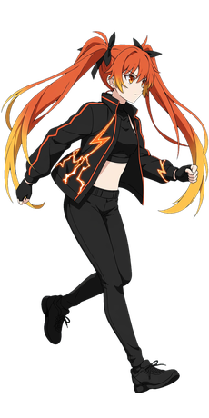
art/sprites/aria-sprite.png · 1.1 MB{kind=link}
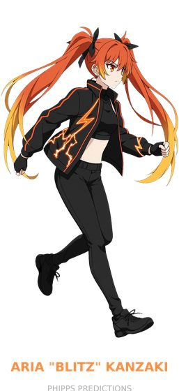
art/sprites/aria-nameplate.png · 942 KB{kind=link}
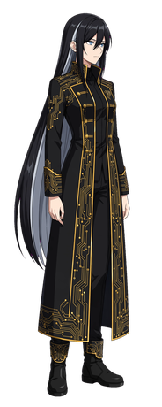
art/sprites/reika-sprite.png · 1.3 MB{kind=link}
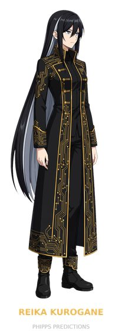
art/sprites/reika-nameplate.png · 1.3 MB{kind=link}
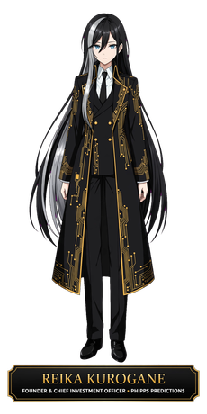
art/sprites/reika-nameplate-transparent.png · 1.2 MBTeam composites
{kind=link}
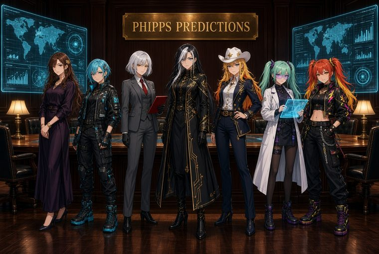
art/team/team-01.jpg · 425 KB{kind=link}
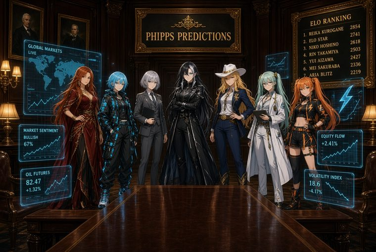
art/team/team-02.jpg · 440 KB{kind=link}
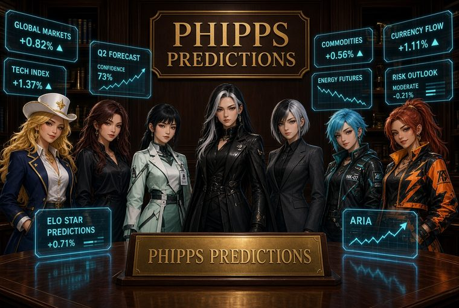
art/team/team-03.jpg · 426 KB{kind=link}
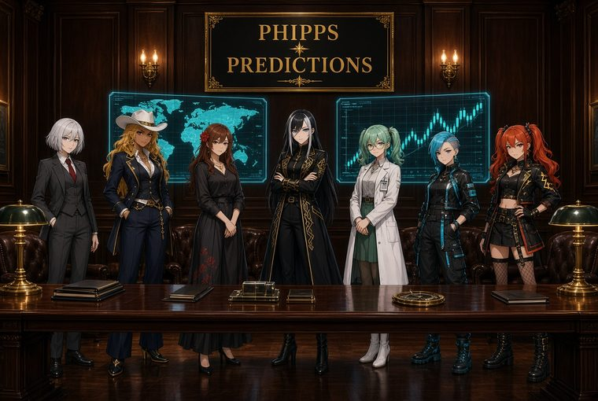
art/team/team-04.jpg · 382 KB{kind=link}
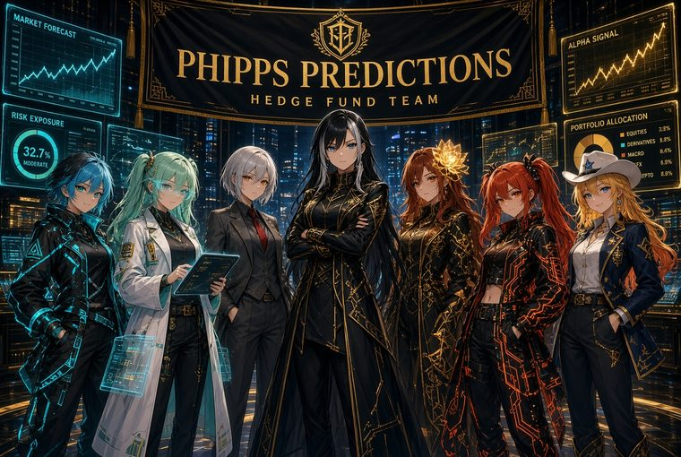
art/team/team-05.jpg · 552 KBWallpapers — 4K

still, 4K webp · stamped jpg · animated mp4
{kind=link}
art/wallpapers/engine/mei/ — Wallpaper Engine pack (project.json + video + preview)
still, 4K webp · stamped jpg · animated mp4
{kind=link}
art/wallpapers/engine/elo/ — Wallpaper Engine pack (project.json + video + preview)
still, 4K webp · stamped jpg · animated mp4
{kind=link}
art/wallpapers/engine/yui/ — Wallpaper Engine pack (project.json + video + preview)
still, 4K webp · stamped jpg · animated mp4
{kind=link}
art/wallpapers/engine/niko/ — Wallpaper Engine pack (project.json + video + preview)
still, 4K webp · stamped jpg · animated mp4
{kind=link}
art/wallpapers/engine/rin/ — Wallpaper Engine pack (project.json + video + preview)
still, 4K webp · stamped jpg · animated mp4
{kind=link}
art/wallpapers/engine/aria/ — Wallpaper Engine pack (project.json + video + preview)
still, 4K webp · stamped jpg · animated mp4
{kind=link}
art/wallpapers/engine/reika/ — Wallpaper Engine pack (project.json + video + preview)Web exports
{kind=link}
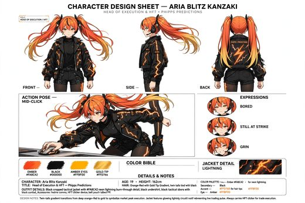
art/gallery/aria_blitz_character_sheet.webp · 439 KB{kind=link}
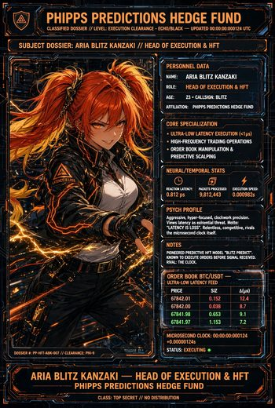
art/gallery/aria_blitz_dossier.webp · 808 KB{kind=link}
art/gallery/character_design_sheet_yui_aizawa.webp · 538 KB{kind=link}
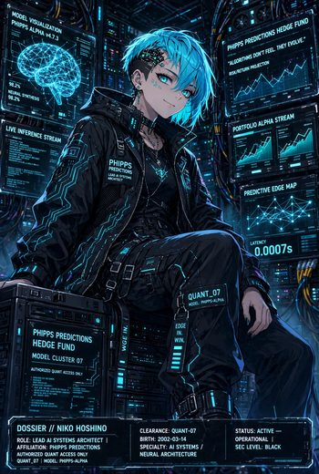
art/gallery/cyberpunk_dossier_niko.webp · 786 KB{kind=link}
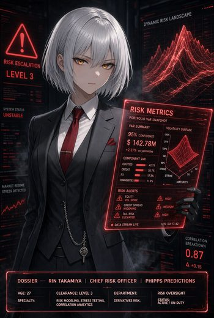
art/gallery/dossier_rin_takamiya.webp · 565 KB{kind=link}
art/gallery/elo_star_design_sheet.webp · 468 KB{kind=link}
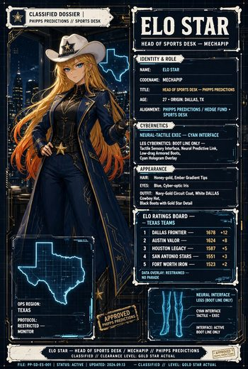
art/gallery/elo_star_dossier.webp · 646 KB{kind=link}
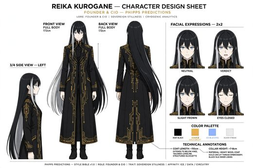
art/gallery/generated_image.webp · 355 KB{kind=link}
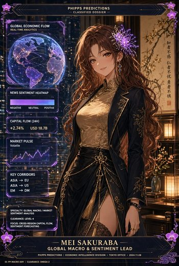
art/gallery/mei_sakuraba_dossier.webp · 794 KB{kind=link}
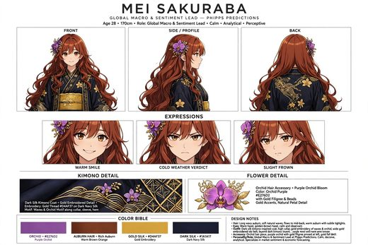
art/gallery/mei_sakuraba_reference_sheet.webp · 499 KB{kind=link}
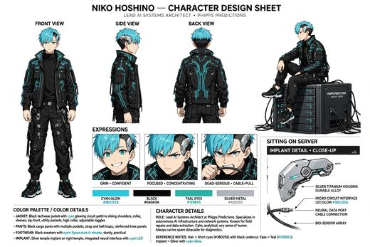
art/gallery/niko_hoshino_character_sheet.webp · 441 KB{kind=link}
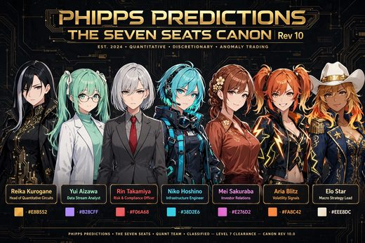
art/gallery/phipps_predictions_seven_seats_canon_rev10.webp · 667 KB{kind=link}
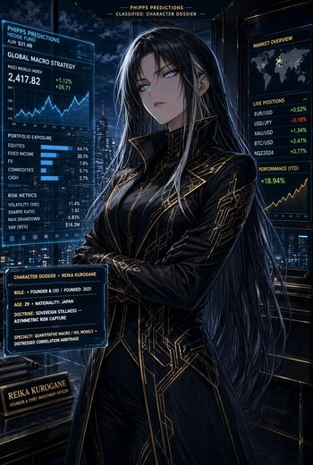
art/gallery/reika_kurogane_dossier.webp · 648 KB{kind=link}
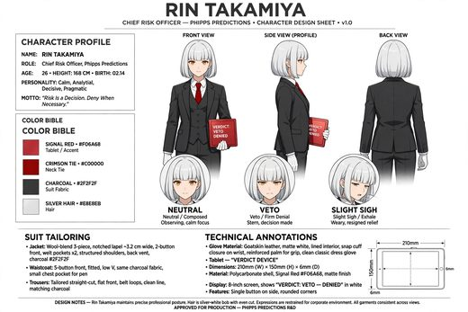
art/gallery/rin_takamiya_character_sheet.webp · 323 KB{kind=link}
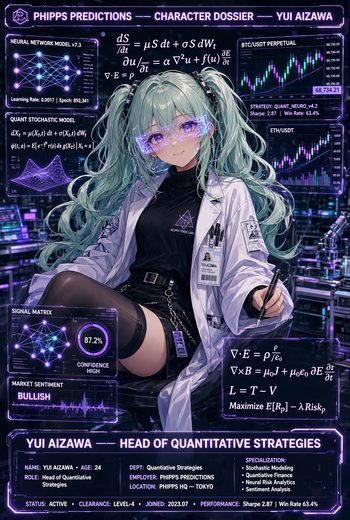
art/gallery/yui_aizawa_dossier.webp · 688 KBart/ — 105 files: 77 gallery pieces, seven Wallpaper
Engine packs, and the raw sets they came from. Generated art for the Phipps Predictions house;
the pack ships it under the repository's MIT license.